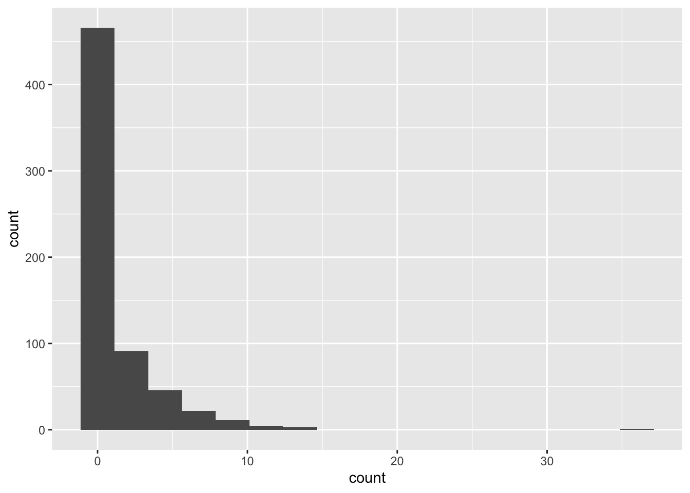
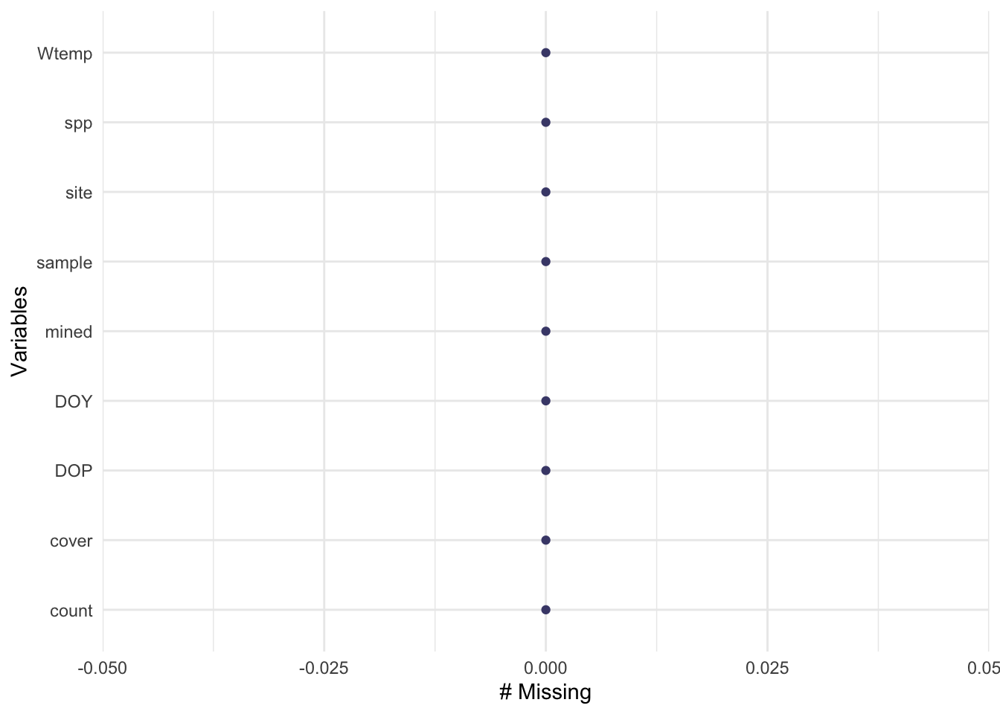
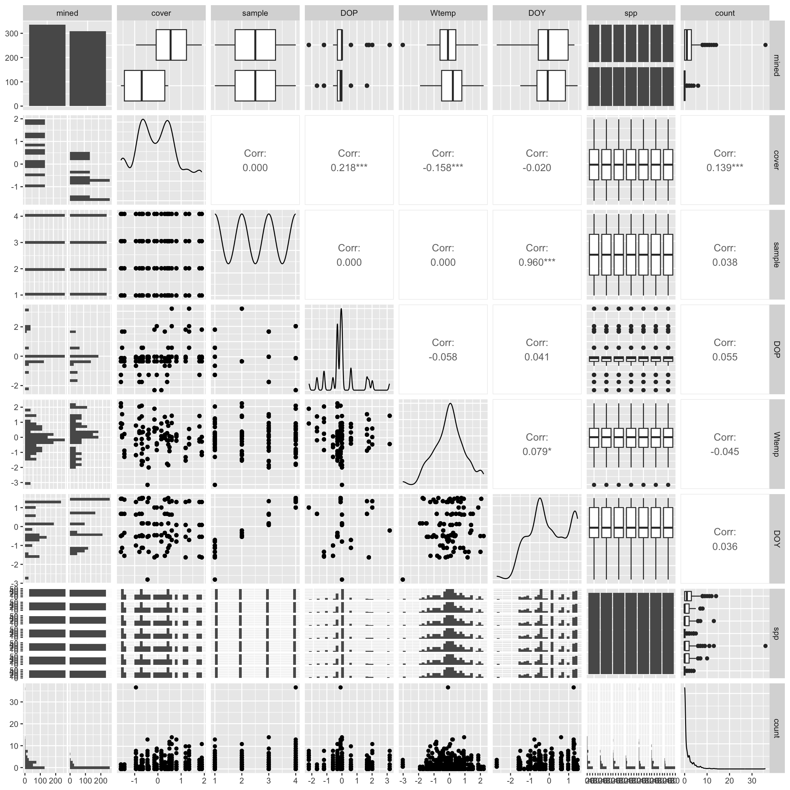
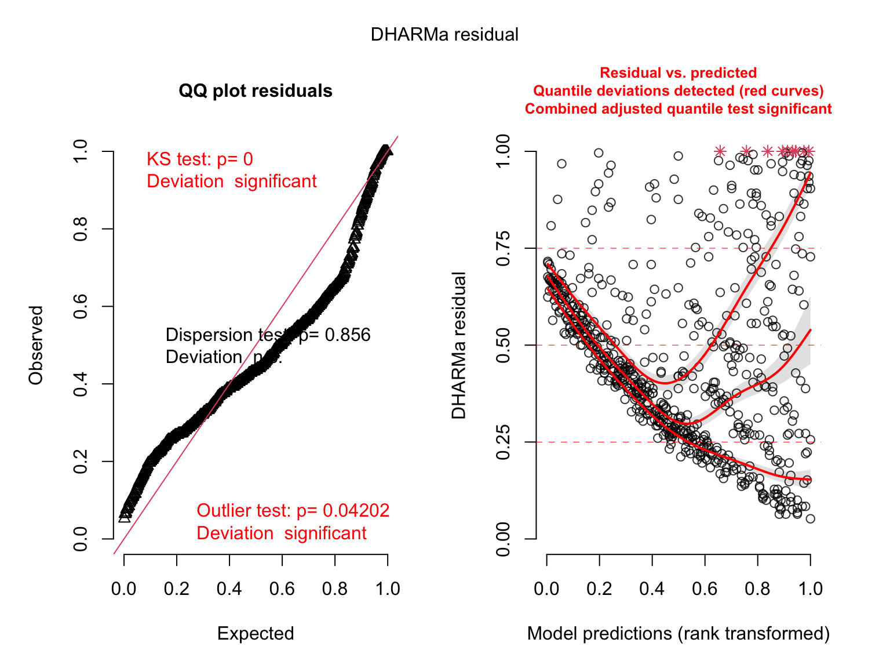
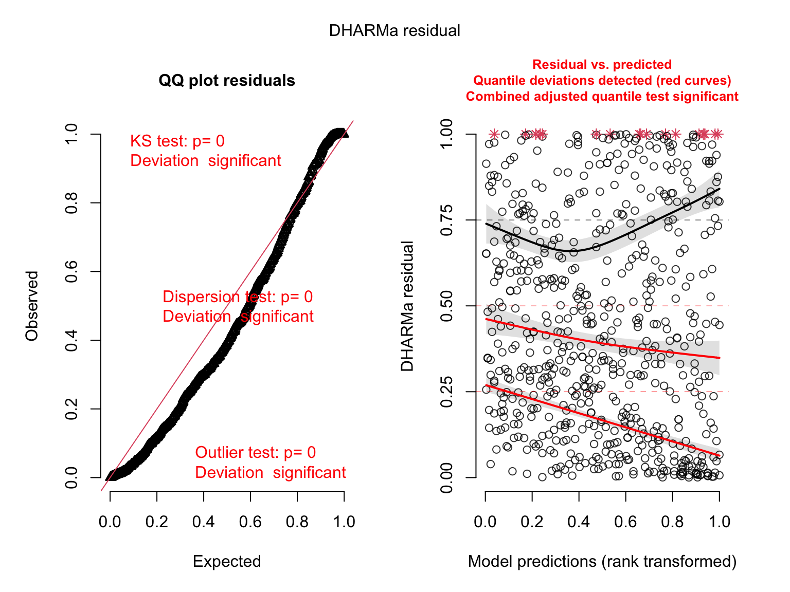
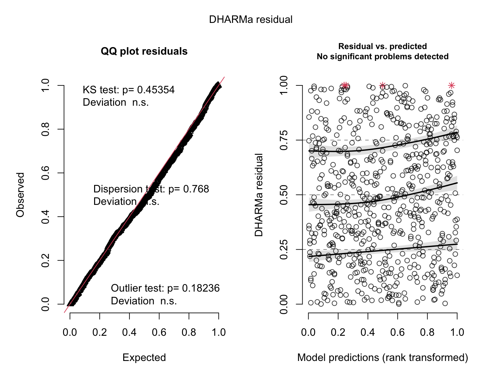
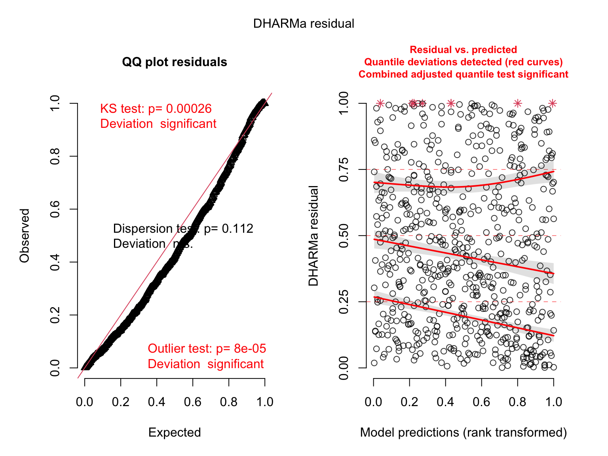
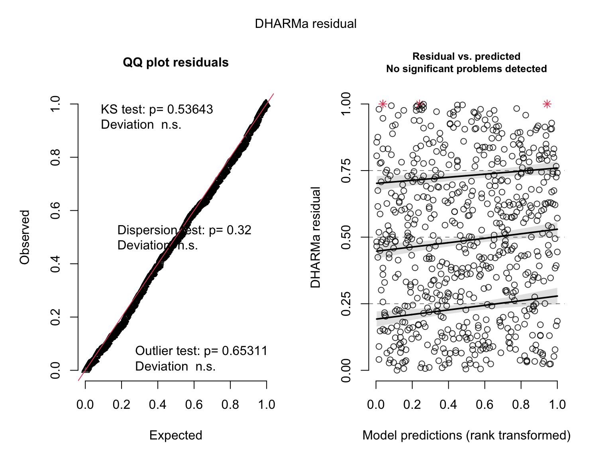
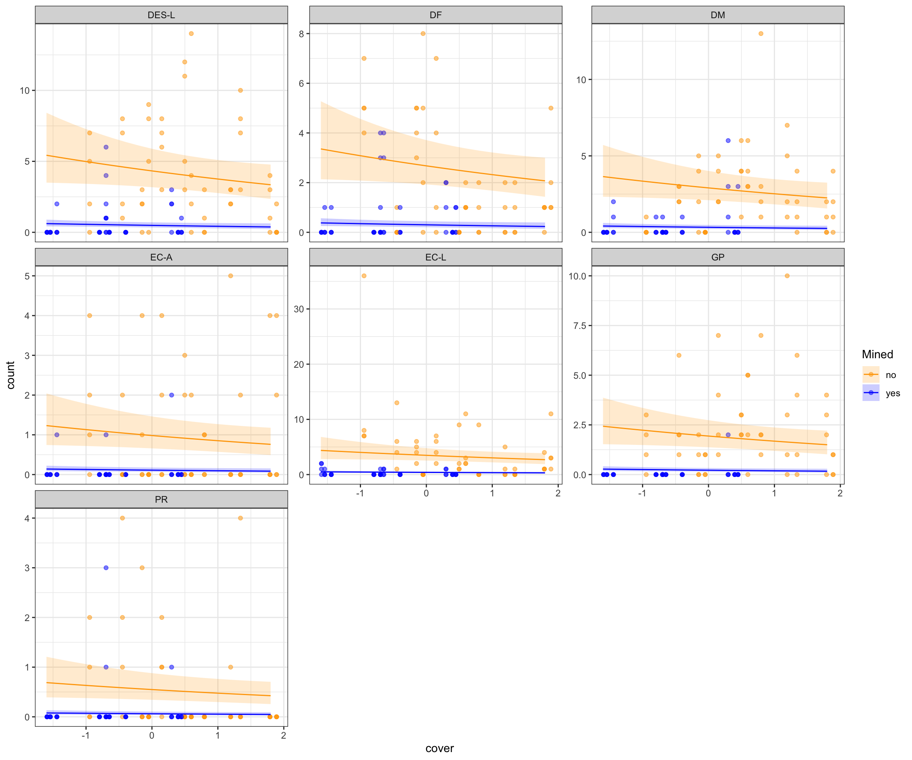

# model packages
library(MASS) # have to read this in before tidyverse
library(lme4)
library(glmmTMB) # ok if you don't have this - just comment it out
# diagnostics and model info
library(DHARMa)
library(MuMIn)
library(ggeffects)
library(lmtest)
library(broom)
# general usage
library(tidyverse)
library(here)
library(naniar)
library(skimr)
library(GGally)
library(flextable)
salamanders <- read_csv(here("data", "salamanders.csv"))Data info from glmmTMB:
site: name of a location where repeated samples were taken
mined: factor indicating whether the site was affected by mountain top removal coal mining
cover: amount of cover objects in the stream (scaled)
sample: repeated sample
DOP: Days since precipitation (scaled)
Wtemp: water temperature (scaled)
DOY: day of year (scaled)
spp: abbreviated species name, possibly also life stage
count: number of salamanders observed
Explore the data set:
histogram of counts:
ggplot(salamanders, aes(x = count)) +
geom_histogram(bins = 17)
Missingness:
gg_miss_var(salamanders) # nothing missing!
Skim:
skim(salamanders)| Name | salamanders |
| Number of rows | 644 |
| Number of columns | 9 |
| _______________________ | |
| Column type frequency: | |
| character | 3 |
| numeric | 6 |
| ________________________ | |
| Group variables | None |
Variable type: character
| skim_variable | n_missing | complete_rate | min | max | empty | n_unique | whitespace |
|---|---|---|---|---|---|---|---|
| site | 0 | 1 | 3 | 5 | 0 | 23 | 0 |
| mined | 0 | 1 | 2 | 3 | 0 | 2 | 0 |
| spp | 0 | 1 | 2 | 5 | 0 | 7 | 0 |
Variable type: numeric
| skim_variable | n_missing | complete_rate | mean | sd | p0 | p25 | p50 | p75 | p100 | hist |
|---|---|---|---|---|---|---|---|---|---|---|
| cover | 0 | 1 | 0.00 | 0.98 | -1.59 | -0.70 | -0.05 | 0.60 | 1.89 | ▅▇▇▅▃ |
| sample | 0 | 1 | 2.50 | 1.12 | 1.00 | 1.75 | 2.50 | 3.25 | 4.00 | ▇▇▁▇▇ |
| DOP | 0 | 1 | 0.00 | 0.98 | -2.20 | -0.30 | -0.09 | 0.00 | 3.17 | ▂▇▅▂▁ |
| Wtemp | 0 | 1 | 0.00 | 0.98 | -3.02 | -0.61 | 0.04 | 0.60 | 2.21 | ▁▃▇▆▂ |
| DOY | 0 | 1 | 0.00 | 1.00 | -2.71 | -0.57 | -0.06 | 0.97 | 1.46 | ▁▅▇▅▇ |
| count | 0 | 1 | 1.32 | 2.64 | 0.00 | 0.00 | 0.00 | 2.00 | 36.00 | ▇▁▁▁▁ |
Pairs plot:
salamanders %>%
select(!site) %>%
ggpairs()
Question: How does salamander count vary with mined status, species, and stream cover?
Build models
# linear model, we know this is wrong
salmod1 <- lm(count ~ cover + mined + spp, data = salamanders)
# generalized linear model with Poisson distribution
salmod2 <- glm(count ~ cover + mined + spp, data = salamanders, family = "poisson")
salmod2.a <- glm(count ~ cover + mined + spp, data = salamanders, family = "poisson")
# generalized linear model with negative binomial distribution
salmod3 <- glm.nb(count ~ cover + mined + spp, data = salamanders)
salmod3.a <- glmmTMB(count ~ cover + mined + spp, data = salamanders, family = "nbinom2")
# generalized linear model with Poisson distribution and random effect of site
salmod4 <- glmer(count ~ cover + mined + spp + (1|site), data = salamanders, family = "poisson")
salmod4.a <- glmmTMB(count ~ cover + mined + spp + (1|site), data = salamanders, family = "poisson")
# generalized linear model with negative binomial distribution and random effect of site
salmod5 <- glmer.nb(count ~ cover + mined + spp + (1|site), data = salamanders)
salmod5.a <- glmmTMB(count ~ cover + mined + spp + (1|site), data = salamanders, family = "nbinom2")Look at residuals
# check diagnostics
plot(simulateResiduals(salmod1)) # bad
plot(simulateResiduals(salmod2)) # bad
plot(simulateResiduals(salmod3)) # ok?
plot(simulateResiduals(salmod4)) # bad
plot(simulateResiduals(salmod5)) # ok?
Which distribution to use?
MuMIn::model.sel(salmod1, salmod2, salmod3, salmod4, salmod5)Model selection table
(Intrc) cover mined spp family class init.theta link random
salmod5 1.409 -0.1042 + + NB(0.9424,l) glmerMod s
salmod3 1.465 -0.1418 + + NB(0.8333,l) negbin 0.833 log
salmod4 1.385 -0.1205 + + p(l) glmerMod s
salmod2 1.486 -0.2309 + + p(l) glm
salmod1 3.447 -0.3426 + + g(i) lm
df logLik AICc delta weight
salmod5 11 -825.964 1674.3 0.00 1
salmod3 10 -836.039 1692.4 18.08 0
salmod4 10 -972.141 1964.6 290.28 0
salmod2 9 -1001.066 2020.4 346.07 0
salmod1 10 -1457.026 2934.4 1260.05 0
Abbreviations:
family: g(i) = 'gaussian(identity)',
NB(0.8333,l) = 'Negative Binomial(0.8333,log)',
NB(0.9424,l) = 'Negative Binomial(0.9424,log)', p(l) = 'poisson(log)'
Models ranked by AICc(x)
Random terms:
s: 1 | siteModel summary
# model object
salmod3
Call: glm.nb(formula = count ~ cover + mined + spp, data = salamanders,
init.theta = 0.8332590711, link = log)
Coefficients:
(Intercept) cover minedyes sppDF sppDM sppEC-A
1.4647 -0.1418 -2.1802 -0.4806 -0.3982 -1.4829
sppEC-L sppGP sppPR
-0.2155 -0.8030 -2.0647
Degrees of Freedom: 643 Total (i.e. Null); 635 Residual
Null Deviance: 885.6
Residual Deviance: 549.2 AIC: 1692# summary
summary(salmod3)
Call:
glm.nb(formula = count ~ cover + mined + spp, data = salamanders,
init.theta = 0.8332590711, link = log)
Deviance Residuals:
Min 1Q Median 3Q Max
-1.7966 -0.8511 -0.6062 0.0812 3.4038
Coefficients:
Estimate Std. Error z value Pr(>|z|)
(Intercept) 1.46467 0.15733 9.309 < 2e-16 ***
cover -0.14180 0.07715 -1.838 0.066062 .
minedyes -2.18017 0.17186 -12.686 < 2e-16 ***
sppDF -0.48061 0.21439 -2.242 0.024977 *
sppDM -0.39819 0.21264 -1.873 0.061123 .
sppEC-A -1.48291 0.24619 -6.023 1.71e-09 ***
sppEC-L -0.21550 0.20909 -1.031 0.302713
sppGP -0.80299 0.22230 -3.612 0.000304 ***
sppPR -2.06472 0.27822 -7.421 1.16e-13 ***
---
Signif. codes: 0 '***' 0.001 '**' 0.01 '*' 0.05 '.' 0.1 ' ' 1
(Dispersion parameter for Negative Binomial(0.8333) family taken to be 1)
Null deviance: 885.60 on 643 degrees of freedom
Residual deviance: 549.16 on 635 degrees of freedom
AIC: 1692.1
Number of Fisher Scoring iterations: 1
Theta: 0.833
Std. Err.: 0.108
2 x log-likelihood: -1672.078 # confidence intervals
confint(salmod3) 2.5 % 97.5 %
(Intercept) 1.1619452 1.78160994
cover -0.2951066 0.01123174
minedyes -2.5140207 -1.85565670
sppDF -0.9135120 -0.04834588
sppDM -0.8214220 0.02428889
sppEC-A -1.9694420 -1.00469459
sppEC-L -0.6235862 0.19129668
sppGP -1.2339240 -0.37486002
sppPR -2.6278646 -1.52359253# adjusted R2
r.squaredGLMM(salmod3) R2m R2c
delta 0.4341864 0.4341864
lognormal 0.5806880 0.5806880
trigamma 0.2400616 0.2400616# model object in table
salmod3 %>%
as_flextable()Estimate | Standard Error | z value | Pr(>|z|) | ||
|---|---|---|---|---|---|
(Intercept) | 1.465 | 0.157 | 9.309 | 0.0000 | *** |
cover | -0.142 | 0.077 | -1.838 | 0.0661 | . |
minedyes | -2.180 | 0.172 | -12.686 | 0.0000 | *** |
sppDF | -0.481 | 0.214 | -2.242 | 0.0250 | * |
sppDM | -0.398 | 0.213 | -1.873 | 0.0611 | . |
sppEC-A | -1.483 | 0.246 | -6.023 | 0.0000 | *** |
sppEC-L | -0.215 | 0.209 | -1.031 | 0.3027 |
|
sppGP | -0.803 | 0.222 | -3.612 | 0.0003 | *** |
sppPR | -2.065 | 0.278 | -7.421 | 0.0000 | *** |
Signif. codes: 0 <= '***' < 0.001 < '**' < 0.01 < '*' < 0.05 | |||||
| |||||
(Dispersion parameter for Negative Binomial(0.8333) family taken to be 1) | |||||
Null deviance: 885.6 on 643 degrees of freedom | |||||
Residual deviance: 549.2 on 635 degrees of freedom | |||||
Visualizing:
predictions <- ggpredict(salmod3, terms = c("cover", "mined", "spp")) %>%
rename(mined = group,
spp = facet)
ggplot(salamanders, aes(x = cover, y = count, fill = mined)) +
geom_point(aes(color = mined), alpha = 0.5) +
facet_wrap(~spp, scales = "free_y") +
geom_line(data = predictions, aes(x = x, y = predicted, color = mined)) +
geom_ribbon(data = predictions, aes(x = x, y = predicted, ymin = conf.low, ymax = conf.high, fill = mined), alpha = 0.2) +
scale_fill_manual(values = c("yes" = "blue", "no" = "orange")) +
scale_color_manual(values = c("yes" = "blue", "no" = "orange")) +
theme_bw() +
facet_wrap(~spp, scales = "free_y") +
labs(fill = "Mined", color = "Mined")
Citation
BibTeX citation:
@online{bui2023,
author = {Bui, An},
title = {Coding Workshop: {Week} 10},
date = {2023-06-07},
url = {https://an-bui.github.io/ES-193DS-W23/workshop/workshop-10_2023-06-07.html},
langid = {en}
}
For attribution, please cite this work as:
Bui, An. 2023. “Coding Workshop: Week 10.” June 7, 2023. https://an-bui.github.io/ES-193DS-W23/workshop/workshop-10_2023-06-07.html.